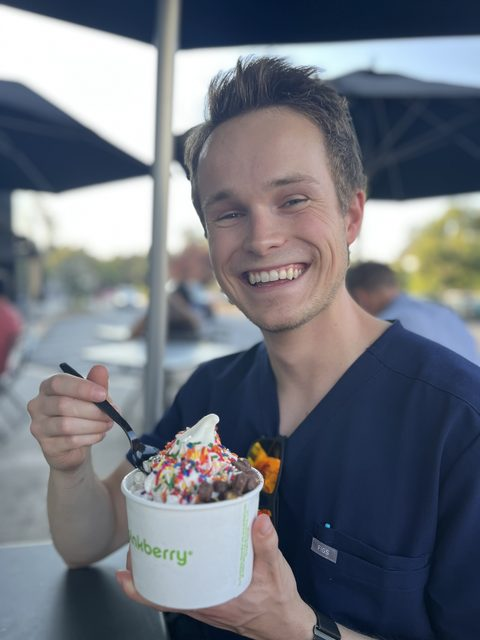

havlik.whoami()

John Lyon Havlik
I'm the inaugural resident in Stanford's Humanities and Social Medicine Research Track, mentored by Keith Humphreys and Jonathan Chen. I build and validate machine-learning models that find people with psychiatric and substance use disorders - including the untreated cases the health system misses. As technical lead, I wrote the classifier behind our study accepted at Nature Mental Health, which identifies substance use disorders from EHR-like data.
Alongside the modeling, I write on psychiatric services and health policy - recent work in JAMA Health Forum on private-equity residential treatment and JAMA Network Open on the economics of telemedicine "house calls." The goal is to move models out of publications and into clinical workflows, and to reach patients earlier. Before medicine, with Peggy Mason at UChicago, I found the human bystander effect in rats (Science Advances).
Selected work
Education
Timeline
Publications by year
Publications
havlik.publications[ : ] ▸ run
Roles
Mentor URiM and first-gen, low-income UChicago undergraduates in computational psychiatry and health-services research. 10+ mentee-authored papers across the JAMA, APA, and BMJ networks; $125,000+ across 30+ grant applications.
Mental-health services research on quality of life and predicting service use across substance use disorders.
National-database analyses of outcomes and disparities in neurosurgery; mentored four junior members in statistics.
Led studies of helping behavior in rats under stressors and anxiolytics; first-author paper in Science Advances.
Led diligence on digital and AI mental-health companies for VC investment; several reviewed went on to be funded.
Helped stand up Yale's biotech seed fund; sourced psychiatrist-founders and prepped financials and pitches.